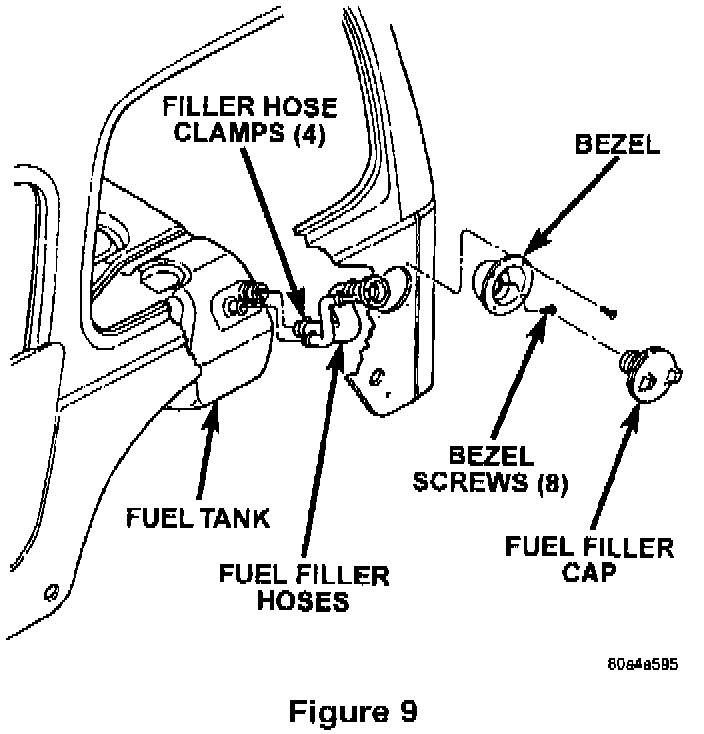
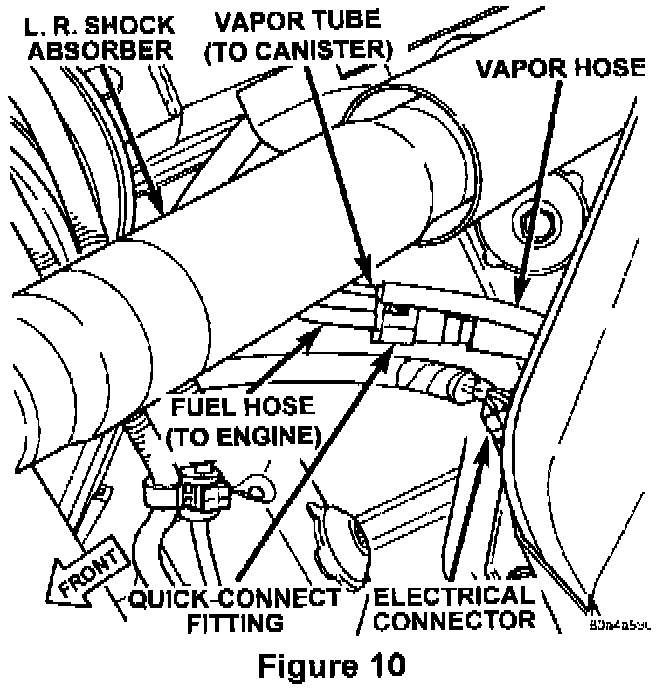
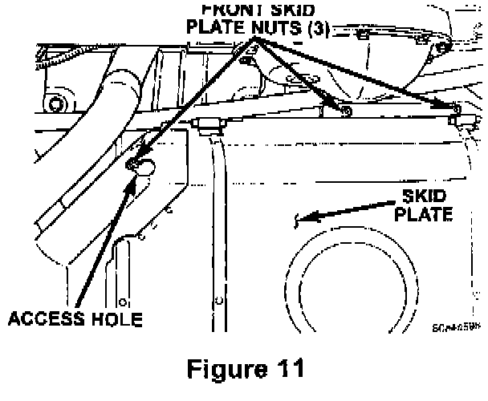
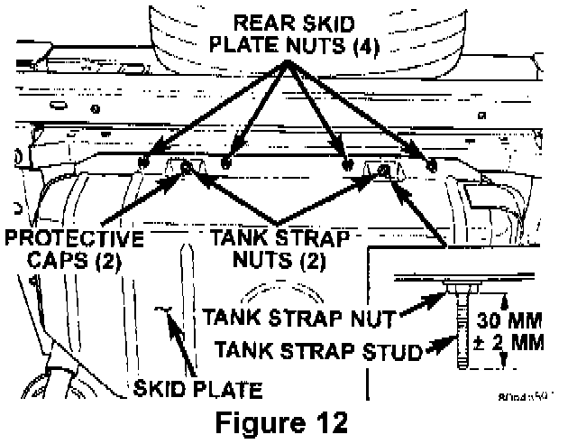
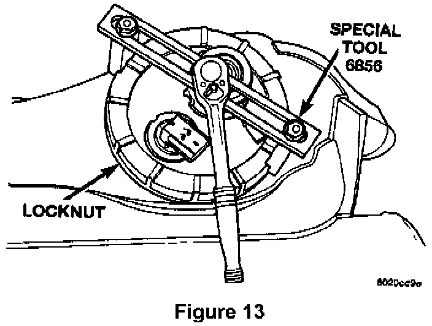
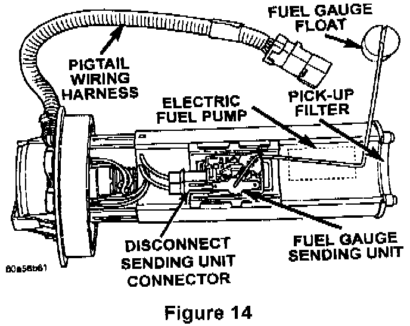
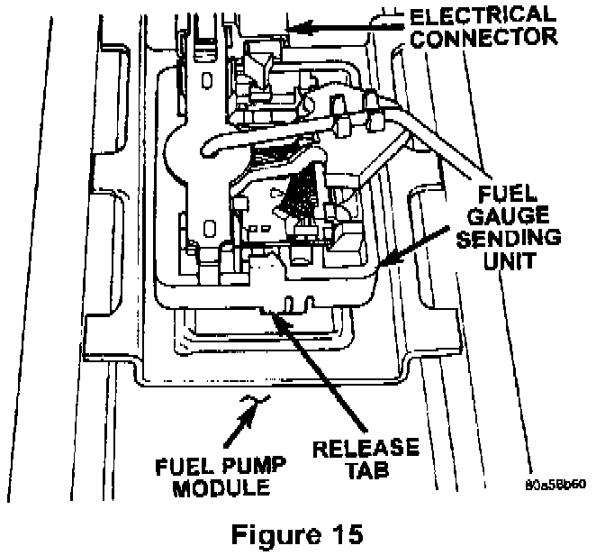

Service Procedure For Wrangler (TJ) Vehicles
WARNING:The fuel system is under constant fuel pressure even with the engine off. Fuel pressure must be released before servicing the fuel tank.
1. With the ignition key in the OFF position disconnect the battery.
Note:
To enhance customer satisfaction remember to record all radio settings before disconnecting the battery and to reset all electronic memory (clock radio settings etc.) when you have completed the service procedure.
2. Remove the fuel tank filler cap to release the fuel tank pressure.
3. Remove the protective cap from the pressure test port on the fuel rail.
WARNING:
Do not allow fuel to spill onto the engine intake or exhaust manifolds. Place shop towels under and around the pressure port to absorb fuel when pressure is released from the rail.
4. Obtain the hose from the fuel pressure gauge tool set # 5069. Position one end of the hose into an approved gasoline container then attach the hose to the fuel rail test port to release the fuel pressure.
5. Remove the hose from the fuel rail and reinstall the test port cap.

6. Remove the eight (8) screws that retain the plastic fuel filler bezel to the body and then remove the fuel filler bezel (Figure 9).
7. Raise the vehicle on an appropriate hoist.
8. Cut the tie wrap that secures the rear axle vent hose to the fuel filler hoses.
9. Remove the four (4) rear push clips from the left rear wheel well splash shield and pull back the shield to access the fuel filler and vent tubes.
10. Disconnect the vent tube from the fuel tank.
11. Drain the fuel tank by inserting a 1/4 I.D. fuel hose through the vent hose nipple. Attach the other end of the hose to an approved gasoline storage container and then drain the tank until empty.

12. Disconnect the fuel pump module electrical connector at the front of the fuel tank (Figure 10).
13. Disconnect the fuel vapor hose from the steel vapor tube at the front of the fuel tank (Figure 10).
14. Disconnect the fuel hose at the front of the fuel tank (Figure 10).
15. Position a transmission jack under the fuel tank skid plate.
NOTE:
The fuel tank and skid plate are removed as an assembly.

16. Remove the three (3) skid plate to body nuts at the front of the fuel tank (Figure 11).

17. Remove the four (4) skid plate to body nuts at the rear of the fuel tank (Figure 12).
IMPORTANT:
Do NOT loosen the tank strap nuts.
18. Lower the fuel tank assembly and set it on the floor.
19. Thoroughly wash and clean the area around the fuel pump module to prevent contaminants from entering the tank.

20. Remove the fuel pump module locknut using Miller Special Tool # 6856 (Figure 13).
NOTE:
The fuel pump module will spring up when the locknut is removed.
21. Remove the fuel pump module from the fuel tank.
22. Remove and discard the fuel pump module gasket.

23. Disconnect the sending unit electrical connector (Figure 14).

24. Press the release tab and remove the sending unit from the fuel pump module (Figure 15). Discard the sending unit.
25. Install the new fuel gauge sending unit onto the fuel pump module (Figure 15).
26. Connect the sending unit electrical connector (Figure 14).
27. Install the provided fuel pump module gasket onto the fuel tank.
28. Connect the fuel vent hose to the fuel tank. Tighten the hose clamp to 27 in-lbs (3 N.m).
29. Position the fuel pump module into the fuel tank opening.
30. Loosely install the fuel pump module locknut.
31. Rotate the fuel pump module until the arrow is pointed toward the front of the vehicle (12 o'clock position).
NOTE:
Make sure that the pump module is properly positioned or the fuel gauge float may bind.
32. Tighten the locknut to 55 ft-lbs (75 N.m) using Special Tool # 6856 (Figure 13).
33. Rotate the fuel filter/fuel pressure regulator until its fitting is pointed to the 10 o'clock position (if necessary).
34. Position the fuel tank on the hydraulic jack.
35. Raise the tank into position.
36. Install the seven fuel tank mounting nuts (Figures 11 and 12). Tighten the nuts to 141 in-lbs (16 N.m).
37. Connect the fuel tank module electrical connector at the front of the fuel tank (Figure 10).
38. Connect the fuel vapor hose to the fuel vapor tube (Figure 10).
39. Connect the fuel hose to the fuel tank module (Figure 10).
40. Secure the rear axle vent hose to the fuel filler hoses with the new tie strap.
41. Install the rear wheel well splash shield using the provided push clips.
42. Lower the vehicle.
43. Install the fuel filler bezel (Figure 9). Tighten the eight screws securely.
44. Refill the fuel tank and install the fuel filler cap.
45. Reconnect the negative battery cable.